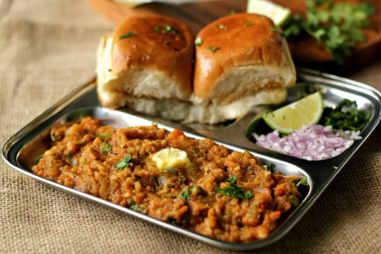

The Odin Recipes!
PaavBhaji

Description
Matar Malai Methi is a creamy North Indian curry prepared with green peas, fresh fenugreek leaves, and rich cream. It has a mild sweet flavor and soft texture that makes it unique from spicy curries.
The bitterness of methi leaves blends beautifully with sweet cream and peas, creating a balanced and delicious taste. This dish is commonly prepared during winter when fresh methi is available.
Matar Malai Methi is usually served with naan, paratha, or jeera rice. It is a royal-style vegetarian dish loved for its smooth and creamy texture.
Ingredients
- 1 cup green peas
- 1 cup chopped methi leaves
- 1 onion chopped
- 1 green chili
- 1 teaspoon ginger garlic paste
- 1/2 cup fresh cream
- 2 tablespoons butter
- 1 teaspoon garam masala
- Salt to taste
Steps
- Wash and chop methi leaves properly.
- Heat butter in a pan.
- Add onions and sauté until soft.
- Add ginger garlic paste and green chili.
- Add methi leaves and cook for a few minutes.
- Add green peas and little water.
- Add cream and garam masala.
- Cook until the curry becomes thick and creamy.
- Serve hot with naan or paratha.
Back to Home